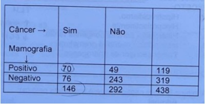
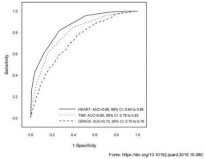
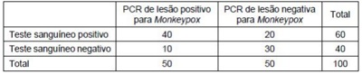
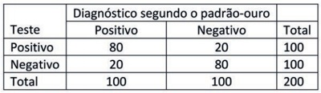
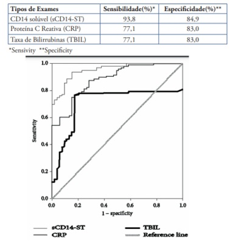
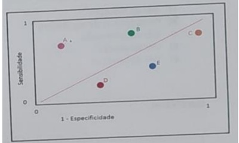
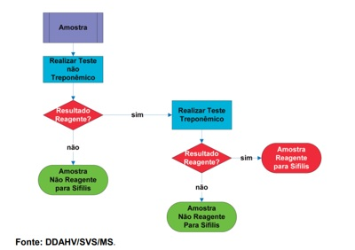
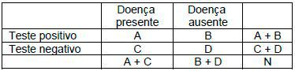
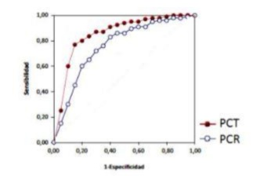
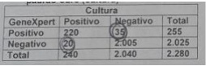

Questão 1 · Medicina de Família e Comunidade · 4000194360Ao interpretar o resultado do teste ergométrico de um atleta maratonista de 30 anos de idade, assintomático, o médico deverá levar em consideração que:
A o teste tem alta confiabilidade
B o teste tem baixa sensibilidade
C o valor preditivo positivo será muito baixo
D o valor preditivo negativo será muito baixo
Questão 2 · Medicina de Família e Comunidade · 4000193912Um novo método para diagnóstico de sí lis foi testado com os seguintes resultados: sensibilidade de 96% e especi cidade de 87%. O que é possível dizer sobre os valores V+ e F+ e sobre a precisão do teste, respectivamente, nesse estudo?
A 87, 96, 91,5%.
B 4, 13, 100%.
C 13, 4, 98%.
D 96, 13, 65%.
E 96, 87, 91,5%.
Questão 3 · Sensibilidade · 4000190562Ao iniciar sua atividade em uma unidade de Saúde da Família, um médico recebe a informação de que, no território onde atua, estão ocorrendo vários casos de sí lis congênita. Ele decide reforçar com os pro ssionais de todas as equipes da unidade a utilização, no pré-natal, de um teste diagnóstico para a sífilis. Assinale a alternativa correta sobre a principal característica que esse teste deve ter.
A Alta especificidade.
B Valor preditivo negativo elevado.
C Alta sensibilidade.
D Razão de verossimilhança negativa.
Questão 4 · Medicina de Família e Comunidade · 4000190072Foi realizado um estudo hipotético sobre a capacidade de os médicos diagnosticarem COVID-19 em um serviço de emergência com 200 pacientes que chegaram com febre, anosmia e mialgia. As impressões clínicas dos pro ssionais foram comparadas com o resultado do teste antígeno para COVID-19. Os resultados foram: dos 100 pacientes com teste positivo, 90 foram diagnosticados pelos médicos. Entre os outros 100 com teste negativo, os médicos diagnosticaram que 30 deles apresentavam a infecção. A partir dos dados fornecidos, a razão de verossimilhança:
A positiva foi de 3
B negativa foi de 0,25
C negativa indica que o teste é um péssimo método diagnóstico
D não tem relação com a sensibilidade e especificidade do teste
Questão 5 · Sensibilidade · 4000186985Analise o estudo abaixo para responder as duas próximas questões; Mulheres foram submetidas à mamogra a para diagnóstico precoce de câncer de mama, que mostrou o seguinte resultado: Pode-se dizer que a sensibilidade do exame foi de:
A 48%
B 17%
C 59%
D 24%
E 33%
Questão 6 · Medidas de Desempenho de Testes Diagnósticos ou Medidas de Perf ormance de Testes Diagnósticos · 4000186980Testes Diagnósticos Analise o estudo abaixo para responder as duas próximas questões; Mulheres foram submetidas à mamogra a para diagnóstico precoce de câncer de mama, que mostrou o seguinte resultado: Sobre o estudo acima é possível dizer:

A A prevalência do câncer de mama na mulheres estudadas foi de 60%.
B A sensibilidade pós-teste positiva foi de 80%.
C A sensibilidade pós-teste negativa foi de 65%.
D O exame de mamografia foi de maior especificidade do que sensibilidade.
E A mamografia não serve para fazer diagnóstico precoce de câncer de mama.
Questão 7 · Especif icidade · 4000186665Um estudo avaliou recentemente o desempenho diagnóstico de dois testes para o rastreamento de uma determinada doença, um por ligação telefônica e outro por videoconferência. Os resultados sugerem que o teste realizado via ligação telefônica identi cou corretamente a doença em 68% das vezes e descartou corretamente a doença em 73% das vezes. A prevalência da doença na amostra estudada foi de 3%. Quando os participantes apresentavam um resultado positivo no teste realizado por ligação telefônica, os pesquisadores realizavam o teste por videoconferência. Caso o resultado do teste por videoconferência fosse positivo, os participantes eram avaliados por um especialista de forma presencial. A metodologia utilizada neste caso
A maximiza a especificidade.
B diminui a segurança de que os resultados positivos representem a doença.
C aumenta o valor preditivo negativo do segundo teste se o primeiro for negativo.
D reduz o valor preditivo positivo, mas aumenta o risco da doença passar despercebida.
Questão 8 · Valor Preditivo Positivo · 4000186445Sabendo que a prevalência de uma doença na população é de 20%, foi desenvolvido um teste com sensibilidade de 80% e especificidade de 70%. Neste caso hipotético o valor preditivo positivo é de:
A 20%
B 40%
C 60%
D 80%
Questão 9 · Curva ROC · 4000186135Em 2021 foi divulgada a nova diretriz brasileira para tratamento da síndrome coronariana aguda sem supra de ST. Nessa diretriz foi posto que o escore HEART deve ser o utilizado na estrati cação desses pacientes. Em 2016 Poldervaart et al havia publicado um estudo que comparou a performance de três escores distintos (HEART, GRACE e TIMI) por meio de uma curva ROC, o resultado desse estudo está exposto na figura abaixo: Sobre a interpretação dessa imagem, assinale a alternativa CORRETA.

A O escore HEART apresenta uma sensibilidade de 88%, sendo o melhor para confirmação diagnóstica.
B O Escore TIMI é o que apresenta a melhor performance quando o paciente apresenta uma baixa probabilidade pré-teste.
C Os três escores apresentam níveis de sensibilidade e especificidades similares, uma vez que todas as curvas iniciam e terminam no mesmo ponto.
D O escore GRACE apresentou a pior performance, uma vez que sua área sob a curva é a menor entre os 3.
E O escore TIMI é o que apresenta melhor acurácia, uma vez que apresenta o melhor equilíbrio entre sensibilidade e especificidade.
Questão 10 · Sensibilidade · Valor Preditivo Positivo · Especif icidade · 4000185979Um laboratório brasileiro desenvolveu um teste que permite o diagnóstico de infecção aguda por monkeypox a partir do soro do paciente. Para tal, coletou de forma pareada, detecção de genoma por PCR de vesículas suspeitas e amostras de sangue de 100 pacientes. O resultado encontra-se na tabela abaixo: Pode-se afirmar, em relação ao estudo realizado:

A A prevalência da doença na população estudada foi de 60%.
B Neste estudo o valor preditivo positivo é maior que o valor preditivo negativo.
C O teste é mais sensível do que específico.
D A utilização de amostras distintas (sangue versus lesão) inviabiliza a interpretação de performance do teste.
E A sensibilidade do teste coincide com o valor preditivo positivo nesta amostra.
Questão 11 · Curva ROC · 4000185971Estudo avaliou a possibilidade de se utilizar as medidas de sinais vitais de pacientes internados para predizer a ocorrência de sepse durante a internação. Diversos modelos matemáticos foram testados e as medidas efetuadas foram reproduzidas no gráfico abaixo: Qual foi o modelo de melhor performance para triagem de sepse em pacientes internados?

A A.
B B.
C C.
D D.
E Não é possível determinar a partir destes dados.
Questão 12 · Valor Preditivo Negativo · Probabilidade préteste e valor preditivo negativo · 4000185821Um estudo é feito para avaliar pacientes que procuraram o pronto-socorro com suspeita de infarto agudo do miocárdio (IAM). De 100 pacientes atendidos, 20 deles tiveram de fato um IAM e, desses 20, 10 tiveram um conjunto positivo de enzimas cardíacas. Dos 80 que não tiveram IAM, nenhum deles teve um conjunto positivo de enzimas. Dadas essas informações, qual é o valor preditivo negativo do conjunto inicial de enzimas cardíacas nessa população de pacientes?
A 20%.
B 22%.
C 50%.
D 75%.
E 89%.
Questão 13 · Medidas de Desempenho de Testes Diagnósticos ou Medidas de Perf ormance de Testes Diagnósticos · 4000185805Sensibilidade O serviço de saúde local está com o planejamento de avaliar se deve ou não usar um teste rápido de antígeno estreptocócico para rastrear faringite estreptocócica. O estudo relacionado mostra que, com 310 pessoas estudadas, em que avaliaram o teste em comparação com a cultura de garganta como o padrão-ouro. Cerca de 210 pacientes tiveram a cultura de garganta positiva e 100 negativa. Das 100 pessoas que tiveram uma cultura de garganta negativa, o teste foi negativo em 98 delas. Dos 210 pacientes que tiveram cultura de garganta positiva, o teste foi negativo em 2 deles. Com relação ao exame descrito, é correto afirmar:
A a sensibilidade é de 4%.
B o valor preditivo positivo é de 82%.
C a especificidade é de 98%.
D a taxa de falso negativo é de 10%
E a taxa de falso-positivo é de 68%.
Questão 14 · Sensibilidade · 4000185766Um novo teste para identi cação de infecção pelo SARS-CoV-2 foi testado em 1000 pessoas. Os resultados foram: dentre as 200 pessoas que estavam infectadas, o novo teste foi positivo em 170; e dentre as 800 pessoas que não estavam infectadas, o novo teste foi negativo em 750. A sensibilidade desse novo teste é:
A 77%.
B 85%.
C 93%.
D 96%.
Questão 15 · Medicina Preventiva · 4000185699Um teste com sensibilidade de 90% e especi cidade de 80% é utilizado para rastreamento de uma população cuja prevalência da doença é 2%. A proporção de verdadeiros negativos entre as pessoas sadias é de, aproximadamente:
A 2%
B 10%
C 20%
D 80%
E 90%
Questão 16 · Medicina Preventiva · 4000185539Um teste para a detecção do HIV é aplicado nos pacientes que frequentam uma unidade de Atenção Básica à Saúde (ABS) e também nos pacientes que são atendidos em um ambulatório especializado em infecções sexualmente transmissíveis (IST). Assinale a alternativa que apresenta a característica de performance do teste para detecção do HIV que apresentará uma probabilidade no ambulatório especializado em IST maior do que a observada na unidade de ABS.
A Especificidade.
B Sensibilidade.
C Valor preditivo negativo.
D Valor preditivo positivo.
Questão 17 · Testes em paralelo · 4000184773Menina, 7 anos, é atendida no Setor de Emergência com história de contato prévio com paciente com diagnóstico de meningite meningocócica. Exame físico: vômitos em jato; rigidez de nuca e sonolência. Punção lombar: líquido cefalorraquidiano normal. O médico iniciou ceftriaxona, enquanto aguardava novos exames. Pode-se a rmar que a conduta da equipe médica utilizou uma visão dos exames em:
A paralelo, para maximizar a especificidade.
B série, para maximizar a especificidade.
C paralelo, para maximizar a sensibilidade.
D série, para maximizar a sensibilidade.
Questão 18 · Valor Preditivo Positivo · Outros · 4000184764Pode-se afirmar que os principais fatores capazes de influenciar o valor preditivo positivo de um exame são:
A especificidade e razão de verossimilhança positiva.
B sensibilidade e a razão de verossimilhança negativa.
C prevalência e especificidade.
D sensibilidade e especificidade.
Questão 19 · Medicina Preventiva · 4000184457No que se refere à qualidade de avaliação dos testes diagnósticos, assinale a alternativa correta.
A A propriedade que define a proporção de não doentes entre os indivíduos que têm um teste negativo é a especificidade.
B Para a triagem de bolsas de sangue, são desejáveis testes com baixa sensibilidade.
C A propriedade mais adequada a ser avaliada para interpretar um exame positivo é a sensibilidade.
D Testes em série melhoram a especificidade do diagnóstico.
E O aumento da prevalência de uma doença na população diminui o valor preditivo positivo de um teste diagnóstico.
Questão 20 · Medicina Preventiva · 4000184455Na avaliação de dois pacientes tabagistas, um de 22 anos de idade e outro de 64 anos de idade, ambos assintomáticos, mas com nódulo pulmonar solitário de 1,2 cm, deve-se considerar que a probabilidade de câncer pulmonar é maior para o idoso, pois
A o valor preditivo negativo do teste não depende da especificidade do teste.
B o número de falsos-positivos é o mesmo nas duas faixas etárias.
C a sensibilidade do teste varia conforme a faixa etária.
D o valor preditivo positivo do teste é maior na população com maior prevalência.
E o valor preditivo negativo do teste não depende da sensibilidade do teste.
Questão 21 · Medicina Preventiva · 4000184320Estima-se que as lesões de Koplik estejam presentes em 60% das pessoas que estão incubando o sarampo. Alguns autores consideram que elas constituem um sinal patognomônico desta doença. O DIAGNÓSTICO DE SARAMPO, PODE-SE AFIRMAR QUE:
A A especificidade é elevada.
B O valor preditivo positivo é 60%.
C É falso positivo em 40% dos casos.
D O valor preditivo negativo é 40%.
Questão 22 · Medicina Preventiva · 4000184315Homem, 55a, procura o Pronto Socorro por dor torácica em aperto, de forte intensidade. Antecedentes: hipertensão arterial e obesidade. Com a hipótese diagnóstica de infarto agudo do miocárdio (IAM), são solicitados exames complementares para confirmar ou afastar o diagnóstico. DIAGNÓSTICO, A PRINCIPAL CARACTERÍSTICA DE VALIDAÇÃO DESTES EXAMES É QUE APRESENTEM:
A Sensibilidade próxima a 100%, para evitar deixar de diagnosticar pacientes com IAM.
B Sensibilidade próxima a 100%, porque assim você vai evitar diagnosticar erradamente como infartados os pacientes sem IAM.
C Especificidade próxima a 100%, para evitar deixar de diagnosticar pacientes com IAM.
D Especificidade próxima a 100%, porque assim você vai evitar diagnosticar erradamente como infartados os pacientes sem IAM.
Questão 23 · Medicina Preventiva · 4000183935Diane, 26 anos, comparece à consulta com queixas de disúria e polaciúria há 2 dias. O médico que a atendeu cou com dúvidas a respeito da con abilidade dos dados da história para definir o diagnóstico de cistite, ou se seriam necessários exames complementares, como EAS e urocultura. Fez uma busca na internet e encontrou um artigo mencionando que a combinação de disúria, polaciúria e ausência de corrimento vaginal tem um valor preditivo positivo (VPP) para cistite de 90%. Diante disso, o médico concluiu que poderia iniciar o tratamento para cistite
A após urocultura, visto que a sensibilidade desse teste seria de 90% e daria mais segurança à cobertura antibiótica.
B após realização do EAS e da urocultura, visto que a especificidade desses testes conjugados seria de 90% para cistite.
C de imediato e empiricamente, visto que a incidência de casos de cistite em mulheres jovens é de 90% na população brasileira.
D de imediato e empiricamente, visto que a probabilidade pré-teste para cistite nesse caso é bem considerável.
Questão 24 · Medidas de Desempenho de Testes Diagnósticos ou Medidas de Perf ormance de Testes Diagnósticos · 4000183771Razão de verossimilhança Sobre características dos exames de testagem diagnóstica, marque a alternativa
A Quanto maior a sensibilidade, menores os falsos positivos. A sensibilidade é uma característica inerente ao teste, não sendo influenciada pela prevalência da doença.
B Quanto maior a especificidade, menores os verdadeiros negativos. A especificidade é uma característica inerente ao teste, não sendo influenciada pela prevalência da doença.
C O conceito de valor preditivo, positivo ou negativo, deve ser usado antes de pedir um teste, e auxilia na decisão sobre o qual teste pedir.
D A razão de verossimilhança indica quanto o resultado de um teste aumentará ou diminuirá a probabilidade pré- teste de determinada doença.
Questão 25 · Medicina Preventiva · 4000183587Um programa de rastreamento organizado, para um câncer frequente em determinada população, será implantado em um serviço de saúde. Nesse contexto, o exame escolhido deve
A ter alta especificidade.
B ter alto valor preditivo positivo.
C ser compulsório para a população sob risco.
D ser oportunístico, pelo melhor custo-efetivo.
E priorizar pessoas que apresentam sinais e sintomas suspeitos da doença.
Questão 26 · Sensibilidade · 4000183550Qual é a sensibilidade deste teste diagnóstico?
A 75% ;
B 90% ;
C 50% ;
D 25% .
Questão 27 · Medicina Preventiva · 4000183490Um estudo de revisão comparou o desempenho do TESTE A versus o TESTE B no rastreamento do câncer colorretal. Em comparação com TESTE B, o TESTE A apresentou melhor detecção das lesões pré-cancerígenas que seriam tratadas para evitar cânceres subsequentes. Porém, o TESTE A também teve maior taxa de falso-positivos. Analise as a rmativas abaixo e assinale a INCORRETA.
A A testagem mais frequente pode piorar a especificidade do TESTE A.
B O TESTE A é menos específico que o TESTE B para rastreamento.
C O TESTE A é mais sensível que o TESTE B para rastreamento.
D A testagem mais frequente pode melhorar a sensibilidade de ambos os testes.
E O valor preditivo negativo é menor no TESTE A que no TESTE B.
Questão 28 · Medicina Preventiva · 4000183163Conforme a bula de teste para Covid-19 adquirido na farmácia, este tem 99,1% de sensibilidade e 95,5% especi cidade para IgM e 88% de sensibilidade e 90% de especi cidade para IgG. Qual das alternativas indica a interpretação correta destes dados?
A 0,9% de resultado falso-negativo para IgM e 88% de resultado verdadeiro-positivo para IgG.
B 0,9% de resultado falso-positivo para IgM e 12% de resultado falso-negativo para IgG.
C 99,1% de resultado falso-negativo para IgM e 88% de resultado falso-negativo para IgG.
D 0,9% de resultado verdadeiro-negativo para IgM e 12% de resultado falso-positivo para IgG.
Questão 29 · Sensibilidade · 4000183000Você foi convidado pelo secretário de saúde para ser consultor na implementação de um teste de rastreamento de uma determinada doença cuja prevalência é de 1% na população de seu município, que é de 5000 habitantes. Ao fazer uma revisão da literatura, você constata que o teste proposto possui uma sensibilidade de 50% e uma especi cidade de 90%. Considerando os dados, você conclui que para cada exame realizado que seja verdadeiro positivo haverá um número de testes falso positivos de aproximadamente: (não considerando casa decimal)
A 19
B 25
C 495
D 4950
Questão 30 · Especif icidade · 4000182487Numa situação de enfrentamento de uma determinada patologia cujo tratamento indicado apresenta efeitos colaterais indesejáveis importantes, é desejável que se disponha de procedimento diagnóstico de alta
A especificidade.
B sensibilidade.
C dedutividade.
D precisão.
E previsibilidade.
Questão 31 · Medicina Preventiva · 4000182145Com base nos valores de sensibilidade e especi cidade de um teste diagnóstico, a chamada Curva ROC (Receiver Operation Characteristic) é uma representação grá ca que busca facilitar a identi cação do melhor ponto de corte desse teste quando aplicado a uma doença. Na Curva ROC aqui representada, o ponto de corte mais adequado para o diagnóstico da doença seria:

A O que mais se aproxima do quadrante superior direito.
B O que se situa no ponto médio da linha diagonal tracejada.
C O que mais se aproxima do quadrante inferior direito.
D O que mais se aproxima do quadrante superior esquerdo.
Revisar: possível letra faltando em enunciado
Questão 32 · Medicina Preventiva · 4000181901Na prática clínica, visando excluir ou confirmar uma doença de forma decisiva, lançamos mão de testes múltiplos. Sobre os testes múltiplos é correto afirmar:
A Os testes em paralelo têm alta sensibilidade e alto valor preditivo positivo.
B Os testes em série têm baixa especificidade e valor preditivo positivo alto.
C Os testes em paralelo têm alto valor preditivo negativo e baixa especificidade.
D Os testes em série têm valor preditivo negativo baixo e alta sensibilidade.
E A sensibilidade e especificidade de um exame variam com a prevalência, então não há como determinar se são altas ou baixas.
Questão 33 · Razão de verossimilhança negativa · 4000181795Analise o quadro referente a um teste diagnóstico: Qual o cálculo para se encontrar o valor da Razão de Verossimilhança Negativa?
A A/A+C dividido por B/B+D.
B C/A+C dividido por D/B+D.
C A/A+B dividido por D/C+D.
D C/C+D dividido por A/A+B.
Questão 34 · Sensibilidade · 4000181674Marcos, 22 anos, HIV positivo, participou de um estudo sobre testes rápidos para HIV e seu resultado foi o único negativo entre as 50 pessoas soropositivas do estudo, com um total de 100 participantes. Nesse caso, qual foi a sensibilidade do teste?
A 96%.
B 99%.
C 49%.
D 98%.
E 50%.
Questão 35 · Medicina Preventiva · 4000181398A aplicação de testes para rastreamento de condições de saúde em grupos populacionais é uma ferramenta para a detecção precoce de agravos. Quando realizamos um rastreamento, qual a característica do teste que nos permite afastar a hipótese de doença em indivíduos com resultado negativo?
A Acurácia.
B Valor preditivo positivo.
C Valor preditivo negativo.
D Razão de verossimilhança positiva.
Questão 36 · Acurácia · 4000190982Em relação aos testes diagnósticos, é CORRETO afirmar que:
A Acurácia é a probabilidade de o teste fornecer resultados corretos, ou seja, ser positivo nos doentes e negativo nos não doentes.
B Especificidade é a probabilidade de resultado positivo em não doentes (verdadeiro positivo).
C Razão de verossimilhança é a taxa entre verdadeiros positivos e verdadeiros negativos, sendo importante para definição do resultado normal de um exame.
D Sensibilidade é a probabilidade de resultado positivo na amostra selecionada em um estudo.
E Valor preditivo negativo é a probabilidade de o exame ser negativo em mais de 95% da população estudada.
Questão 37 · Probabilidade préteste e valor preditivo positivo · Probabilidade préteste e valor preditivo negativo · 4000177195O valor preditivo de um teste constitui-se na probabilidade de uma doença existir, dados os resultados do teste. Empregando os conceitos de Valor Preditivo Positivo (VPP) e Valor Preditivo Negativo (VPN). A esse respeito, assinale a afirmativa correta.
A O valor preditivo não depende da prevalência da doença na população testada.
B O valor preditivo positivo refere-se à probabilidade de o indivíduo ter a doença.
C O valor preditivo positivo caracteriza-se pela proporção de indivíduos com a doença que têm um teste positivo para a doença (verdadeiro-positivos).
D O valor preditivo negativo caracteriza-se pela proporção de indivíduos sem a doença que apresentam um teste negativo (verdadeironegativos).
Questão 38 · Sensibilidade · 4000175892Para MEDRONHO et al (2008) grande parte do trabalho clínico consiste na busca diagnóstica de doenças. Nesse contexto, os testes diagnósticos possuem propriedades que determinam a precisão desses exames. Ao solicitar u m teste diagnóstico o médico deverá levar em conta a sensibilidade do exame que pode ser definida como a proporção de:
A verdadeiros negativos entre todos os indivíduos com teste positivo;
B verdadeiros positivos entre todos os indivíduos sadios;
C verdadeiros negativos entre todos os indivíduos com teste falso negativo;
D verdadeiros positivos entre todos os indivíduos doentes;
E casos
Questão 39 · Acurácia · 4000175817O que é Acurácia de um teste diagnostico?
A A acurácia do diagnóstico é a capacidade de um médico não discriminar entre a condição do paciente e a sua saúde; além disso, o médico não tem a capacidade de quantificar a acurácia por meio de medidas de precisão de diagnóstico, como sensibilidade, especificidade, valores preditivos positivos e negativos, razões de verossimilhanças positiva e negativa e a área sob a curva ROC.
B A acurácia do diagnóstico é a capacidade de um teste discriminar entre a condição alvo e saúde, e pode ser quantificada por meio de medidas de precisão de diagnóstico, como sensibilidade, especificidade, valores preditivos positivos e negativos, razões de verossimilhanças positiva e negativa e a área sob a curva ROC.
C A acurácia do diagnóstico é a capacidade de um teste não discriminar entre a condição alvo e saúde; além disso, não pode ser quantificada por meio de medidas de precisão de diagnóstico, como sensibilidade, especificidade, valores preditivos positivos e negativos, razões de verossimilhanças positiva e negativa e a área sob a curva ROC.
D A acurácia do diagnóstico é a capacidade de uma enfermeira não discriminar entre a condição clínica do paciente e a sua saúde; tampouco não é capaz de quantificar por meio de medidas de prevenção o diagnóstico do paciente.
E Nenhuma das respostas acima
Questão 40 · Probabilidade préteste e valor preditivo positivo · Valor Preditivo Positivo · Valor Preditivo Negativo · 4000175816Sobre valores preditivos, responda o certo:
A Valor preditivo negativo (VPN): é a probabilidade de um indivíduo avaliado e com resultado positivo ser doente. Valor preditivo positivo (VPP): é a probabilidade de um indivíduo avaliado e com resultado negativo ser realmente normal.
B Valor preditivo positivo (VPP): é o resultado de um teste cujo resultado deixa dúvida se ser realmente o indivíduo é doente e por isso não deve confirmar. Valor preditivo negativo (VPN): é o resultado negativo de um teste e o indivíduo tem a doença.
C Valor preditivo positivo (VPP): é a probabilidade de um indivíduo avaliado e com resultado positivo ser realmente doente. Valor preditivo negativo (VPN): é a probabilidade de um indivíduo avaliado e com resultado negativo ser realmente normal.
D Valor preditivo indireto (VPI): é a probabilidade que um indivíduo avaliado pode ter um resultado positivo e não ser realmente doente. Valor preditivo direto (VPD): é a probabilidade de um indivíduo avaliado pode ter um resultado positivo ser realmente normal.
E Todas as respostas acima
Questão 41 · Escolha de testes diagnósticos para rastreamento · 4000175661Como responsável sanitário de uma instituição, você foi acionado para dar um parecer de como deve ser o teste para detectar um surto de uma doença transmissível pelo contato físico apenas. Neste caso, a conduta é que qualquer suspeita este paciente deverá ser afastado para investigação, portanto o perfil deste teste diagnostico deve ter:
A alta sensibilidade, já que, dão poucos resultados falso positivos.
B alta especificidade, já que, rastreios devem buscar menos resultados falso positivos.
C alta sensibilidade, já que, rastreios devem buscar menos resultados falso positivos.
D alta especificidade, já que, dão poucos resultados falso negativo.
E alta sensibilidade, já que, dão poucos resultados falso negativo.
Questão 42 · Dif erença entre sensibilidade e valor preditivo positivo · 4000175648Dif erença entre especif icidade e valor preditivo negativo Considere que um teste rápido para COVID-19, está sendo utilizado em um estado onde sua prevalência é 25%. O que se espera dos Valores Preditivos Positivo (VPP), Valores Preditivos Negativo (VPN) e da Especi cidade (E) deste teste se, o mesmo for aplicado em outro estado, onde a prevalência da infecção é 50%:
A diminuirá, aumentará, aumentará.
B diminuirá, aumentará, será mantida.
C aumentará, aumentará, diminuirá.
D aumentará, diminuirá, será mantida.
E diminuirá, diminuirá, será mantido.
Questão 43 · Dif erença entre sensibilidade e valor preditivo positivo · 4000175573Na avaliação de um teste diagnóstico, foram encontrados os seguintes resultados: Os valores dos cálculos da sensibilidade e do valor preditivo negativo foram, respectivamente,
A 0,9 e 0,888.
B 0,5 e 0,850.
C 0,8 e 0,818.
D 0,2 e 0,181.
Questão 44 · Testes Diagnósticos · 4000173608Sobre as principais características de performance dos testes diagnósticos, assinale a alternativa CORRETA.
A Valor preditivo negativo pode ser calculado como: (Sensibilidade / (1 – especificidade)).
B Sensibilidade é a probabilidade de resultado positivo nos doentes, e pode ser calculada como: (d / (c + d)).
C Valor preditivo positivo indica a capacidade de um teste detectar corretamente as pessoas com a doença/condição.
D Valores preditivos contêm informações sobre o poder do teste (sensibilidade e especificidade) e da população a ser examinada (prevalência da doença).
E Acurácia é a probabilidade de um determinado resultado em alguém com a doença dividida pela probabilidade do mesmo resultado em alguém sem a doença.
Questão 45 · Especif icidade · 4000173607Analise a tabela de uma pesquisa clínico-epidemiol gica, na qual a fundoscopia, feita por médicos clínicos, foi comparada com um exame padrão-ouro, para avaliar as evidências sobre o desempenho da oftalmoscopia feita por um clínico para o diagnóstico da retinopatia diabética, quando testada contra um exame considerado padrão-ouro. Assinale a alternativa que corresponde à ESPECIFICIDADE da fundoscopia.
A 80%
B 58%
C 50%
D 48%
E 36%
Questão 46 · Introdução aos Testes Diagnósticos · 4000173604Na tabela abaixo, temos um diagrama de um teste diagnóstico da epidemiologia, utilizado para a aferição de um teste diagnóstico comparado ao Padrão-Ouro. Analisando a tabela, assinale a alternativa INCORRETA.
A d = número de pessoas não expostas e sadias.
B a+b = número de pessoas expostas que ficaram doentes.
C a+c = número de pessoas que ficaram doentes.
D b+d = número de pessoas que permaneceram sadias.
E c+d = número de não expostos.
Questão 47 · Probabilidade préteste e valor preditivo positivo · 4000170643Durante o atendimento da agenda programática na UBS, o médico de família recebeu Clara, uma mulher cis de 25 anos de idade, que está com palpitações no peito e dor torácica, principalmente à noite, há dois meses. Com base nesse caso hipotético, assinale a alternativa correta quanto à queixa inicial e ao valor preditivo positivo (VPP) para infarto agudo do miocárdio (IAM).
A Considerando-se a alta prevalência de IAM na população em geral, a idade e o contexto não modificam o raciocínio clínico do profissional de saúde.
B O contexto de atendimento e a faixa etária da paciente são dois dados que reduzem o VPP para IAM, influenciando o raciocínio clínico do profissional de saúde.
C A probabilidade pós-teste para um IAM não irá depender da prevalência de IAM em mulheres jovens.
D O gênero da paciente não terá influência no VPP para IAM.
E O VPP terá influência no raciocínio clínico do profissional de saúde que irá realizar o atendimento, mas não muda a conduta de solicitar troponina na urgência.
Questão 48 · Sensibilidade · Especif icidade · 4000170508Buscando estimar a quantidade de pessoas com uma determinada doença na população, a secretaria de saúde de um município aplicou um teste com 80% de sensibilidade e 70% de especi cidade. O teste foi aplicado em um grupo de 1.000 pessoas, obtendo-se 415 resultados positivos. Considerando que a prevalência encontrada nesse experimento seja de fato a prevalência da doença no município, quantas pessoas estavam acometidas pela doença? (População total do município: 400.000 pessoas).
A 100.000
B 92.000
C 132.000
D 40.000
Questão 49 · Razão de verossimilhança · 4000170403Sobre a validade dos testes diagnósticos, assinale a alternativa CORRETA.
A Razão de verossimilhança fornece seu resultado sob a forma de um valor relativo, ou seja, um número sem unidade, permitindo, então, sua utilização em fórmulas de cálculo de probabilidade de doença após combinação de testes.
B Acurácia é a probabilidade de determinado resultado em alguém com a doença dividida pela probabilidade do mesmo resultado em alguém sem a doença e também pode ser positiva ou negativa.
C Especificidade é a probabilidade de resultado positivo nos doentes (verdadeiro positivo) e é calculado como: a/(a+c).
D Sensibilidade é a probabilidade de resultado negativo nos não-doentes (verdadeiro negativo) e é calculado como: d/b+d.
Questão 50 · Medidas de Desempenho de Testes Diagnósticos ou Medidas de Perf ormance de Testes Diagnósticos · 4000170402Sensibilidade Podemos definir os testes diagnósticos, de acordo com a nalidade, em três tipos clínicos distintos: a) rastreamento de doença em pessoas assintomáticas; b) diagnóstico de doença em pessoa com suspeita (sintomas ou sinais de doença); c) avaliar a progressão da doença ou resposta ao tratamento. Sobre este tema, é CORRETO afirmar:
A São exemplos de testes quantitativos quando apresentam resultados descritivos e que dependem da percepção humana, por exemplo, os exames de imagem.
B Testes qualitativos são expressos em resultados numéricos (por medidas), podendo ser subdivididos em resultados dicotômicos e resultados contínuos.
C São cinco as principais características de performance dos testes diagnósticos com resultados numéricos: sensibilidade, especificidade, valor preditivo (positivo e negativo), acurácia e razão de verossimilhança (positiva e negativa).
D O valor preditivo positivo descreve a proporção do resultado positivo ou negativo em quem, sabidamente, está, ou não, doente. ida oib pr ed
Questão 51 · Medicina Preventiva · Teorema de Bayes Sensibilidade Especif icidade e Valores Preditivos · 4000170089Sensibilidade Sobre a acurácia dos testes diagnósticos para a covid-19 registrados na Anvisa, a sensibilidade e a especi cidade variaram entre os fabricantes, contudo, em geral, a sensibilidade foi superior a 85%, e a especi cidade foi superior a 94%. Caso dois indivíduos que residam em diferentes cidades, uma com prevalência de covid-19 de 20% e a outra de 33%, realizem testes sorológicos do mesmo fabricante e ambos obtenham resultados positivos, a probabilidade desses indivíduos realmente apresentarem a doença é:
A igual, pois quanto maior a especificidade de um teste, maior será o seu valor preditivo positivo.
B igual, pois o valor preditivo positivo de um teste é uma propriedade exclusiva deste, ou seja, não depende da prevalência da doença.
C diferente, pois quanto maior a prevalência de uma doença, maior é o valor preditivo de um teste.
D diferente, pois quanto maior a sensibilidade de um teste, maior será o seu valor preditivo positivo.
Questão 52 · Testes Diagnósticos · 4000169990Ao se propor determinado tipo de teste para uma doença cuja letalidade é alta, mas que diminui de maneira significativa quando tratada precocemente, é importante que ele tenha alto(a)
A valor preditivo negativo (VPN).
B conegatividade.
C reprodutibilidade.
D especificidade.
E sensibilidade.
Questão 53 · Razão de verossimilhança · 4000169722Calcule a Razão de Verossimilhança ( A Razão de Verossimilhança para Teste positivo é igual a

A 1.
B 2.
C 3.
D 4.
Questão 54 · Rastreamento · Medicina Baseada em Evidências · Estudos Epidemiológicos · 4000169444A tabela acima resume os resultados do estudo o f Systematic com cinquenta anos de idade ou mais. Acompanhadas por, aproximadamente, onze anos, mil mulheres zeram mamografia e mil mulheres não fizeram o rastreamento. Com base nessas informações e na tabela, assinale a alternativa correta.
A A mamografia como rastreamento de câncer de mama não apresenta benefício, pois praticamente nãomudou a mortalidade por câncer de mama.
B Toda intervenção médica tem riscos. Mesmo as intervenções que pretendem amenizá-lo não reduzem o risco a zero.
C Apesar do benefício na diminuição da mortalidade por câncer de mama ter sido pequeno, a mamografia tem a vantagem de ser um exame barato, rápido e sem efeitos colaterais indesejáveis.
D A ressonância nuclear magnética deve ser o exame de escolha para o rastreio do câncer de mama.
E Os dados apresentados não são confiáveis, pois as revisões Cochrane apresentam qualidade técnica apenas de grau moderado.
Questão 55 · Sensibilidade · 4000169157Num serviço de infectologia de hospital pediátrico, 25 crianças menores de 5 anos tiveram diagnóstico confirmado de meningite meningocócica por cultura do líquido cefalorraquidiano (líquor), entre janeiro e dezembro de 2019. Na bacterioscopia de líquor de 23 desses casos havia bacilos gram-negativos. Assinale a opção que aponta a sensibilidade da bacterioscopia com coloração gram para esse estudo.
A 92%
B 80%
C 77%
D 90%
E 82%
Questão 56 · Valor Preditivo Negativo · 4000169103Um estudo avaliou o desempenho do exame físico no rastreamento de câncer de mama. Foram incluídas 2.500 mulheres com adenocarcinoma, comprovado por biópsia (Grupo 1). Também foram incluídas 5.000 mulheres sem evidência de câncer na biópsia de mama (Grupo 2). Ambos os grupos foram pareados por idade. Os resultados do exame físico foram positivos em 1.800 mulheres do Grupo 1 e em 800 mulheres do Grupo 2. Nesse estudo, o valor preditivo negativo do exame físico foi
A 69,2%
B 72%
C 80%
D 84%
E 85,7%
Questão 57 · Medidas de Desempenho de Testes Diagnósticos ou Medidas de Perf ormance de Testes Diagnósticos · 4000168927Medicina Preventiva Considere a seguinte a rmação: "Mulheres com achado de disúria polaciúria, sem corrimento ou irritação vaginal, tem uma probabilidade de 90% de ter um quadro de infecção urinária". Dentre as alternativas abaixo, qual conceito epidemiológico melhor se aplica à afirmação é:
A Sensibilidade.
B Valor preditivo positivo.
C Especificidade.
D Odds Ratio.
Questão 58 · Acurácia · 4000167890O ECG (Eletrocardiograma) tem uma longa história na Medicina. Na avaliação da doença isquêmica, por exemplo, é considerado um instrumento com boa acurácia diagnóstica. Um estudo caso-controle pareado por idade e sexo entre 500 pacientes que tiveram infarto do miocárdio (IM) comprovado, comparados com 1000 controles sem história de infarto de miocárdio (IM), mostrou que 100 casos tiveram ECG normal, apesar de história de IAM prévio, enquanto que, entre os controles, 150 mostraram um ECG anormal. Então, a partir destes dados podemos afirmar:
A A sensibilidade é igual a 85,00%.
B A especificidade é igual a 80,33%.
C A acurácia global é de 83,33%.
D Nada podemos afirmar sobre a acurácia pois não há dados suficientes.
Questão 59 · Especif icidade · 4000167862Um paciente de 73 anos de idade, diagnosticado com câncer retal, retomou ao atendimento médico na unidade básica de saúde para conversar com seu médico de família, pois está muito nervoso e não sabe se deve realizar os procedimentos propostos pelo especialista, visto que, para ele, “é melhor morrer do que usar uma bolsinha para o resto da vida” (colostomia). Com relação a esse caso clínico e com base nos conhecimentos médicos correlatos, julgue o item a seguir. Entre os testes diagnósticos recomendados para avaliar a possibilidade de neoplasia, estão os de alta especi cidade, visto que apresentam menor probabilidade de falso-negativos.
A Certo.
B Errado.
Questão 60 · Testes Diagnósticos · Razão de verossimilhança · 4000167172Um grupo de pesquisa desenvolveu um novo teste sorológico, significativamente mais barato, para o diagnóstico de infecção pelo vírus SARS-Cov-2. Para a avaliação da acurácia desse teste, foi feito um estudo transversal com 5.000 participantes. Comparado ao padrão-ouro definido, os resultados desse novo teste foram os seguintes: Considerando esses resultados, assinale a alternativa correta.
A A sensibilidade do novo teste foi 86%.
B A especificidade do novo teste foi superior a 90%.
C A razão de verossimilhança positiva foi 7,0.
D A razão de verossimilhança negativa foi 0,16.
E A acurácia do teste foi inferior a 86%.
Questão 61 · Testes Diagnósticos · 4000166851Na avaliação de um teste diagnóstico, foram encontrados os seguintes resultados: Os valores dos cálculos da probabilidade pré-teste e da acurácia foram, respectivamente:

A 5% e 25%.
B 10% e 50%.
C 20% e 75%.
D 50% e 85%.
Questão 62 · Testes Diagnósticos · 4000166529O raciocínio clínico em Atenção Primária à Saúde deve partir dos dados e informações a respeito da probabilidade de existência de uma doença especí ca em um dado momento no tempo. Esta probabilidade, a qual chamamos de pré-teste, possui um sinônimo pelo qual é mais comumente conhecida. Qual é?
A Valor Preditivo Positivo
B Incidência
C Prevalência
D Valor Preditivo Negativo
Revisar: possível letra faltando em enunciado
Questão 63 · Sensibilidade · Odds Ratio ou Razão de Chances · Especif icidade · 4000166266Um estudo caso-controle detectou 56 expostos em 100 casos e 40 expostos em 100 controles. Sabendo-se que a detecção de casos e de controles foi 100% acurada e que o questionário utilizado para detecção de exposição pregressa tinha sensibilidade de 80% e especi cidade de 100%, qual seria o valor da questionário?
A 1,9
B 2,3
C 1,7
D 2,1
Questão 64 · Rastreamento · Critérios para a implantação de um programa de rastreamento · 4000165400NÃO é uma medida dos benefícios do programa de rastreamento:
A custo por vida salva
B custo por caso detectado
C ganho na expectativa de vida
D risco absoluto e redução do risco absoluto
Questão 65 · Testes Diagnósticos · 4000165182Quanto à capacidade diagnóstica de um exame, analise as afirmativas abaixo. I - A especificidade de 70% permitirá 30% de falsos positivos. II - O valor preditivo depende da prevalência ou probabilidade pré-teste de um agravo. III - A alta sensibilidade é útil para afastar determinada suspeita clínica, se o exame for negativo. IV - A acurácia é uma qualidade do exame, independente da frequência da doença. Assinale a alternativa com as afirmativas corretas.
A Apenas a III.
B Apenas I e IV.
C Apenas I, II, III.
D apenas II, III e IV.
E Todas as alternativas são corretas.
Questão 66 · Valor Preditivo Positivo · 4000165011Em um mesmo teste diagnóstico, quanto maior a probabilidade pré-teste:
A menor o VPP e maior o valor preditivo negativo
B maior o VPP e maior o valor preditivo negativo
C menor o VPP e menor o valor preditivo negativo
D maior o VPP e menor o valor preditivo negativo
Questão 67 · Acurácia · Sensibilidade · Especif icidade · 4000164861Um grupo de pesquisadores realizou um estudo sobre a capacidade de médicos clínicos de diagnosticar pneumonia em 565 pacientes que visitaram à emergência de um hospital num período de 6 meses. As impressões dos médicos foram comparadas aos resultados de RX de tórax. Dos 145 pacientes que apresentaram RX de tórax positivo para pneumonia, 95 foram diagnosticados pelos médicos como tendo a doença. Entre os 420 pacientes que apresentaram o RX de tórax negativo para pneumonia, os médicos diagnosticaram que 65 deles apresentavam a doença.
A A sensibilidade da impressão clínica do médico acerca de pneumonia nesse estudo foi de 84,5%.
B A especificidade da impressão clínica do médico acerca da pneumonia nesse estudo foi de 87,6%.
C Se o médico pensou que o paciente tinha pneumonia, ele estava certo em 65,5% dos pacientes.
D A acurácia da impressão clínica do médico acerca da pneumonia nos pacientes que procuraram a emergência foi de 79,6%.
Questão 68 · Acurácia · Sensibilidade · Valor Preditivo Positivo · 4000164859A definição correta do diagnóstico de um paciente é peça fundamental para o sucesso do clínico. Para tanto existem diferentes testes diagnósticos que auxiliam nessa correta definição, é importante que o médico saiba interpretar as informações de resultados de testes diagnósticos, assim como suas características. Considere as a rmativas a seguir e assinale a alternativa CORRETA: I - A sensibilidade pode ser definida como a probabilidade de um teste identi car os indivíduos com menor probabilidade de ficarem doentes. II - A acurácia de um teste é a proporção de doentes dividida pela prevalência do teste. III - O Valor Preditivo Positivo varia com a prevalência da doença na população sendo testada. IV - Os valores preditivos positivo e negativo são estimativas da mesma probabilidade para aqueles indivíduos que tiveram os testes positivo e negativo, respectivamente.
A Somente as afirmativas II e IV estão corretas.
B Somente as afirmativas I e III estão corretas.
C Somente as afirmativas III e IV estão corretas.
D Todas as afirmativas estão corretas.
Questão 69 · Rastreamento · 4000164555Assinale a alternativa correta em relação ao rastreamento de doenças.
A O viés de sobrediagnóstico constitui-se em um dos principais problemas de saúde pública atribuídos aos programas de rastreamento que não é eliminado por meio dos ensaios clínicos randomizados.
B É uma intervenção que não oferece risco potencial à saúde das pessoas sem o respectivo benefício.
C Avaliação de procedimentos de rastreamento é técnica e eticamente fácil, pois envolve vieses e fenômenos simples.
D É a aplicação de testes em pessoas sintomáticas com objetivo de selecionar indivíduos para intervenções cujo benefício potencial seja maior do que o dano potencial.
Questão 70 · Testes Diagnósticos · 4000164109Em relação aos testes de sensibilidade e especi cidade, havendo uma prevalência adequada da doença pesquisada, é correto afirmar que nos exames:
A sensíveis há menor probabilidade de resultados falsos negativos, sendo assim, se o resultado for positivo é possível concluir que a pessoa é doente para a patologia pesquisada
B sensíveis há menor probabilidade de resultados falsos negativos, sendo assim, se o resultado for negativo, é possível concluir que a pessoa é sadia para a doença pesquisada
C específicos há menor probabilidade de resultados falsos positivos, sendo assim, se o resultado for negativo é possível concluir que a pessoa é sadia para a doença pesquisada
D específicos há menor probabilidade de resultados falsos negativos, sendo assim, se o resultado for negativo é possível concluir que a pessoa é sadia para a doença pesquisada
Questão 71 · Sensibilidade · 4000163796Um exame físico foi usado para rastreamento de câncer de próstata em 2500 homens com carcinoma comprovado por biópsia, e em um grupo controle de 5.000 homens emparelhados por idade e raça. Os resultados estão demonstrados na tabela a seguir: Assinale a alternativa que apresenta CORRETAMENTE a sensibilidade do exame físico.
A 69%.
B 72%.
C 84%.
D 85%.
Questão 72 · Sensibilidade · Valor Preditivo Positivo · Especif icidade · 4000174579Um dos campos importantes da Medicina Preventiva e Social é a epidemiologia clínica. No que se refere a alguns conceitos relacionados a ela, assinale a alternativa correta:
A Testes sensíveis não são úteis quando positivos.
B Valor preditivo negativo é a probabilidade de o paciente estar sadio entre os que tiveram o teste positivo.
C Uma vez definida a realização de um teste diagnóstico, o valor preditivo (positivo ou negativo) desse teste não tem mais importância clínica relevante.
D O valor preditivo negativo determina a sensibilidade e a especificidade de um teste.
E Testes altamente específicos são necessários quando resulta dos falsos positivos podem levar o paciente a tratamento ou conduta desnecessários e, às vezes, de risco.
Questão 73 · Dif erença entre sensibilidade e valor preditivo positivo · 4000174084Considerando um teste rápido para detecção de antígeno para o vírus SARS-Cov-2, o qual foi testado em 200 pacientes, sendo 100 com confirmação de Covid-19 pelo teste padrão ouro e 100 pacientes sem a doença. Cento e vinte pacientes tiveram teste rápido positivo, sendo 90 pacientes confirmados para Covid-19 e 30 pacientes sem Covid-19. Oitenta pacientes tiveram teste rápido negativo, sendo 70 sem Covid-19 e 10 com diagnóstico de Covid-19 pelo teste padrão ouro. Qual é a probabilidade de um paciente com resultado positivo para esse teste rápido ter Covid-19 na população estudada?
A 70%.
B 75%.
C 80%.
D 90%.
Questão 74 · Sensibilidade · Especif icidade · 4000173950Xiao et al. analisaram a curva ROC e a e cácia da avaliação diagnostica de três indicadores de sepsis neonatal em pacientes pediátricos: RESPONDA: Qual é o tipo de exame que tem a maior e cácia na avaliação diagnóstica de sepsis neonatal, segundo este estudo?

A sCD14-ST.
B CRP.
C TBIL.
D Não é possível saber.
Questão 75 · Probabilidade préteste e valor preditivo positivo · 4000173475Júlia, 28 anos de idade, consultou médico de família da UBS de referência, queixando-se de episódios de dor torácica em aperto, associada a aumento da frequência respiratória e sensação de mal-estar geral. As crises duram cerca de meia hora e cessam espontaneamente. Júlia não tem comorbidades, nega tabagismo e apresenta IMC = 20 kg/m2 . Pesquisou seus sintomas na rede mundial de computadores, razão pela qual, durante o atendimento, solicita teste ergométrico como meio para encontrar a causa dos seus sintomas. Diante da solicitação de Júlia, o médico, considerando a indicação e a motivação para tal exame, deverá explicar, respectivamente, que:
A Deve ser solicitado, devido ao alto valor preditivo positivo do exame para a paciente.
B Não há necessidade, devido ao baixo valor preditivo negativo do exame para a paciente.
C Não há não necessidade, devido ao alto valor preditivo positivo do exame para a paciente.
D Não há necessidade, devido ao baixo valor preditivo positivo do exame para a paciente.
E Dever ser solicitado, devido ao valor preditivo negativo do exame para a paciente.
Questão 76 · Medidas de Desempenho de Testes Diagnósticos ou Medidas de Perf ormance de Testes Diagnósticos · 4000172942Rastreamento Você é gestor em uma cidade com alta prevalência de diabetes mellitus tipo 2. Pensando em melhorar o cuidado prestado aos cidadãos de seu município, você decide pesquisar se vale a pena treinar os médicos que atuam na atenção primária de sua cidade para realizar fundoscopia ou se seria melhor investir na compra de aparelhos retinógrafos para detecção d e retinopatia diabética. Após revisão da literatura, você descobre que a fundoscopia dilatada feita por médico não oftalmologista tem sensibilidade de 49% e especi cidade de 84%. Sobre a fundoscopia dilatada feita por médico não oftalmologista para o rastreamento de retinopatia diabética, é correto afirmar que:
A Seria uma boa opção, pois tem alta especificidade.
B Não seria uma boa opção, pois tem baixa sensibilidade.
C Não seria uma boa opção, pois tem alta especificidade.
D Seria uma boa opção, pois tem baixa sensibilidade.
Questão 77 · Razão de verossimilhança negativa · Razão de verossimilhança · 4000172894Um estudo foi realizado para avaliar o desempenho diagnóstico dos critérios NEXUS (National Emergency X-Radiography Utilization Study), para constatar o risco de lesão na coluna cervical em crianças após traumatismo craniano. A sensibilidade do NEXUS foi de 73% e a especi cidade de 96%. A prevalência de lesão na coluna cervical em crianças, após traumatismo craniano, em uma população a ser rastreada é estimada em 2%. Qual é a probabilidade de que uma criança com teste NEXUS positivo, após traumatismo craniano, não tenha lesão na coluna cervical?
A 0,27
B 0,37
C 0,73
D 0,99
Questão 78 · Curva ROC · 4000172687Sobre os pontos da CURVA ROC acima, o que apresenta maior especificidade é:

A Ponto A
B Ponto B
C Ponto C
D Ponto D
E O cálculo não é possível.
Questão 79 · Critérios para a implantação de um programa de rastreamento · 4000147073Tendo em vista os programas de rastreamento e seus possíveis vieses, assinale a alternativa correta.
A O diagnóstico precoce através do rastreamento é capaz de alterar o desfecho, independentemente da eficácia do tratamento.
B Em casos de sobrediagnóstico, o principal erro é a falha no diagnóstico, podendo ser considerada como um falso-positivo do rastreamento.
C O rastreamento deve, preferencialmente, ser realizado para condições que não apresentem fases pré-clínicas bem conhecidas, aumentando o impacto sobre a morbimortalidade.
D Ao avaliarmos a eficácia de um determinado programa de rastreamento, a forma mais confiável de descrever sua efetividade é a diferença na sobrevida em 5 anos.
E No viés de tempo de duração, há erro ao considerar como homogêneas evoluções heterogêneas na dita “história natural das doenças”.
Questão 80 · Testes Diagnósticos · 4000147062No cenário da Atenção Primária à Saúde (APS), na qual em geral temos uma população com baixa prevalência de doenças, a probabilidade de um exame cujo resultado indique qualquer alteração de fato representar alguma doença será menor que a probabilidade em um cenário de alta prevalência de doenças, como hospitais secundários e terciários. Esse conceito refere-se a qual característica dos testes diagnósticos?
A Sensibilidade.
B Especificidade.
C Valor preditivo positivo.
D Acurácia.
E Prevalência.
Questão 81 · Probabilidade préteste e valor preditivo positivo · 4000145585Observe o uxograma a seguir. O uxograma 1 apresenta uma estratégia para rastreamento de sí lis em indivíduos assintomáticos. É CORRETO afirmar que:

A Após realizar os dois testes conforme proposto, a probabilidade de pessoas com o teste treponêmico positivo ter sífilis irá aumentar
B Após realizar os dois testes, a capacidade de identificar corretamente aqueles que têm sífilis aumentará
C Após realizar os dois testes, a capacidade de identificar corretamente aqueles que não tem sífilis diminuirá
D Quanto maior a concordância observada entre o teste não treponêmico e o teste treponêmico, maior será a acurácia da estratégia de rastreamento
Questão 82 · Medidas de Desempenho de Testes Diagnósticos ou Medidas de Perf ormance de Testes Diagnósticos · 4000145537Medicina Preventiva O Câncer de próstata é o segundo tipo mais frequente entre os homens. A detecção precoce pode ser feita com exames clínicos, radiológicos ou laboratoriais. A dosagem de PSA- Antígeno prostático específico - é o marcador mais utilizado. Utilizando-se o ponto de corte 2,5ng/dl há aumento da sensibilidade, porém com baixa especi cidade. (Sensibilidade=91,3% Especificidade=14,37%). Leia as assertivas a seguir sobre esse teste e assinale a alternativa CORRETA:
A A capacidade do teste PSA em detectar falso positivo é de 91,3%
B A mudança do ponto de corte para 2,0ng/dl, automaticamente, aumentará a sensibilidade do teste
C A probabilidade de uma pessoa com teste negativo não ter câncer de próstata é de 14,37%
D A razão de probabilidade para o teste positivo é de 1, 1
Questão 83 · Medicina Preventiva · Valor Preditivo Positivo · 4000144722Um exame com 90% de sensibilidade e 80% de especi cidade para o diagnóstico de uma doença, quando aplicado em um grupo de 1.000 pessoas, mostrou-se positivo em 340 examinados. Considerando o desempenho do teste, a verdadeira prevalência da doença nessas pessoas provavelmente é:
A 34,0%.
B 23,8%.
C 30,0%.
D 20,0%.
Questão 84 · Incidência e Prevalência · Prevalência · 4000142589Considere os dados a seguir. O cálculo da probabilidade pré-teste é:

A A + B / C + D
B A + B / N
C A / N
D A + C / N
Questão 87 · Valor Preditivo Positivo · Dif erença entre especif icidade e valor preditivo negativo · 4000140617Valor Preditivo Negativo Considere que um determinado teste diagnóstico, de uma infecção, está sendo utilizado em uma cidade onde sua prevalência é 10%. O que se espera dos valores preditivos positivo (VPP), negativo (VPN) e da especi cidade (E) deste teste, se o mesmo for aplicado em outra cidade onde a prevalência da infecção é 20%?
A Diminuirá; aumentará; aumentará.
B Diminuirá; aumentara; será mantida.
C Aumentará; aumentará; diminuirá.
D Aumentará; diminuirá; será mantida.
Questão 88 · Medicina Preventiva · Valor Preditivo Positivo · Valor Preditivo Negativo · 4000138717A prevalência de uma determinada doença em uma população é de 20%. Sendo assim, um teste de diagnóstico, com sensibilidade de 80% e especificidade de 70%, foi desenvolvido. Com base nessa situação hipotética, assinale a alternativa que apresenta, correta e respectivamente, o valor preditivo positivo (VPP) e o valor preditivo negativo (VPN).
A 30% e 60%
B 38% e 70%
C 40% e 93%
D 50% e 90%
E 53% e 87%
Questão 89 · Probabilidade préteste e valor preditivo positivo · Especif icidade · 4000138716Com relação aos testes utilizados no diagnóstico clínico de uma doença, assinale a alternativa correta.
A Os testes sensíveis são necessários para o diagnóstico de doenças leves.
B Os testes sensíveis dão poucos resultados falso-positivos.
C Os testes específicos dão muitos resultados falso-positivos.
D Os testes específicos dão poucos resultados falso-positivos.
E O valor preditivo negativo é mais útil para o resultado positivo.
Questão 90 · Valor Preditivo Positivo · Valor Preditivo Negativo · 4000137535A prevalência de insu ciência coronariana em dada população é de 10%. Para detectá-la utilizou-se um teste ergométrico cuja sensibilidade é de 80% e a especificidade é de 60%. O valor preditivo positivo (VPP) e o valor preditivo negativo (VPN), respectivamente, desse teste são:
A VPP = 20% e VPN = 40%.
B VPP = 96% e VPN = 18%.
C VPP = 18% e VPN = 96%.
D VPP = 40% e VPN = 20%.
Questão 91 · Medicina Preventiva · Curva ROC · 4000137531Dois novos e diferentes tipos de testes rápidos para o diagnóstico de COVID-19 foram avaliados. O teste A apresentou uma área sob a curva ROC de 0,92 e o teste B de 0,67. Tendo os dois o mesmo custo, como gestor, você compraria para a sua instituição e por quê:
A teste B, porque quanto menor a área sob a curva, mais acurado é o teste.
B teste A, porque quanto maior a área sob a curva, mais acurado é o teste.
C teste B, porque sua prevalência é menor do que a do teste A.
D teste A, porque sua especificidade é maior do que a do teste B.
Questão 92 · Curva ROC · 4000130400Na bula de um teste de imunoensaio de terceira geração (A) foi apresentada a curva Characteristic) PARA AFIRMAR A SUPERIORIDADE DO TESTE “A” EM RELAÇÃO AO “B” É PRECISO OBSERVAR QUE:
A A área sob a curva do teste (A) é maior que a do teste (B).
B O teste (A) apresenta ponto de corte com maior sensibilidade, independente da taxa de falsos positivos comparado com o teste.
C Não é possível avaliar os testes sem conhecer a prevalência da doença na população.
D O teste (A) deve apresentar maior simetria entre especificidade e sensibilidade que o teste (B).
Questão 93 · Sensibilidade · 4000110767Aplicou-se questionário para identi car indivíduos com apneia do sono em 1.800 indivíduos do sexo masculino, com idade média de 52 anos (dp=±9 anos) e IMC de 33,8 (dp=± 4kg/m²); obtidos em clínicas especializadas em distúrbios do sono. Neste grupo apresentou o seguinte desempenho sensibilidade (S) de 97% e especi cidade (E) de 13%. Este mesmo questionário foi aplicado em população jovem onde esta doença atinge cerca de 1% do grupo. Qual alternativa re ete corretamente comportamento esperado deste questionário?
A Aumentará apenas a especificidade.
B Diminuirá apenas a sensibilidade.
C Diminuirá sensibilidade e aumentará especificidade.
D Manterá mesma sensibilidade.
Questão 94 · Valor Preditivo Positivo · 4000110489Qual a afirmativa correta com relação às propriedades de um teste diagnostico?
A Quanto mais sensível maior é a redução de falsos positivos.
B Quanto menor a prevalência menor o valor preditivo positivo.
C Quanto mais específico maior é a redução de falsos negativos.
D Quanto maior a prevalência maior o valor preditivo negativo.
Questão 95 · Valor Preditivo Positivo · 4000077159Paciente com dor precordial ao esforço moderado para alto fez um exame complementar altamente específico (95%) e moderadamente sensível para doença coronariana, que forneceu resultado positivo. Em relação à terapêutica, a melhor conduta é:
A fazer outro teste complementar sensível antes de se pensar no tratamento
B fazer um teste mais acurado antes de se pensar em tratamento
C avaliar amitriptilina ou outra medicação para dor neuropática
D iniciar tratamento para a coronariopatia
Questão 96 · Prevalência · Valor Preditivo Positivo · Especif icidade · 4000034023Foi realizado um estudo para avaliar a capacidade dos clínicos em diagnosticar infecção estreptocócica, utilizando-se de 149 pacientes com ""dor de garganta"" que procuraram o serviço de emergência aos resultados de culturas orofaríngeas para Streptococcus do grupo A. Dos 37 pacientes que apresentaram cultura orofaríngea positiva, 27 foram diagnosticados pelos médicos como tendo faringite estreptocócica. Entre os 112 pacientes que apresentaram cultura negativa, os médicos diagnosticaram que 35 deles apresentava a doença. Em relação a esse estudo, assinale a alternativa CORRETA.
A A prevalência da doença no grupo e a especificidade do exame clínico sãorespectivamente 33% e 44%
B Ao afastar a doença entre os examinados, os médicos acertaram em 73%
C O diagnóstico clínico da faringite estreptocócica estava correto em 73% dos pacientes examinados
D O percentual de falsos positivos do exame clínico dos médicos é de 56%
Questão 97 · Rastreamento · 4000130422PARA A IMPLANTAÇÃO DE PROGRAMAS DE RASTREAMENTO, O PROBLEMA CLÍNICO A SER RASTREADO DEVE ATENDER, ENTRE OUTROS, O SEGUINTE CRITÉRIO:
A A) A doença deve representar um importante problema de saúde pública, independente de magnitude, transcendência e vulnerabilidade.
B O benefício da detecção e do tratamento precoce com o rastreamento deve ser maior do que se a condição fosse tratada no momento do diagnóstico.
C A sazonalidade como fator de risco.
D A alta prevalência na população, independente da história natural da doença.
Questão 98 · Probabilidade préteste e valor preditivo positivo · 4000130392Um teste sorológico para identi car a infecção por, pelo menos, um sorovar de leptospira foi aplicado em 1.000 trabalhadores da área de saneamento de um município.Foram encontrados 100 indivíduos com resultado positivo. Considere que a prevalência esperada nesta população é de 10% e a sensibilidade do teste é de 95%. O VALOR PREDITIVO POSITIVO (VPP) É:
A 10%.
B 95%.
C 30%.
D 100%.
Questão 99 · Escolha de testes diagnósticos para rastreamento · 4000106599Qual das características apresentadas é compatível com a realização de um teste diagnóstico num cenário de rastreamento populacional?
A Baixa sensibilidade
B Alta probabilidade pré-teste
C Baixo valor preditivo positivo
D Alta especificidade
Questão 100 · Sensibilidade · 4000086123A Tomogra a Computadorizada (TC) tem sido descrita como um método sensível ao diagnóstico de determinada doença. A sensibilidade de um teste diagnóstico reflete a capacidade do teste em identificar:
A Os verdadeiros positivos, dentre todos os positivos.
B Corretamente, quem não tem a doença.
C Corretamente, quem tem a doença.
D Os verdadeiros negativos, dentre todos os negativos.
Questão 101 · Dif erença entre sensibilidade e valor preditivo positivo · 4000071033Dif erença entre especif icidade e valor preditivo negativo Para teste de sensibilidade e especi cidade de 90%, realizado para estimar a probabilidade de uma doença, há dois cenários diferentes: cenário 1 com 1% de prevalência e cenário 2 com 99% de prevalência de ter essa doença. Considerando que a pessoa A vivencia o cenário 1 com resultado do teste positivo e a pessoa B vivencia o cenário 2 com resultado do teste negativo, a probabilidade da pessoa A estar doente e da pessoa B estar sadia, respectivamente, é:
A Baixa/baixa.
B Baixa/alta.
C Alta/baixa.
D Alta/alta.
Questão 102 · Escolha de testes diagnósticos para rastreamento · 4000034679Na avaliação de um programa de rastreamento de uma doença, devem ser considerados diversos aspectos da doença e do teste empregado. A esse respeito, assinale a alternativa CORRETA:
A A especificidade é mais importante do que a sensibilidade para testes de rastreamento de doenças muito frequentes para evitar gastos desnecessários.
B A sensibilidade de um teste diaginóstico é influenciada pela prevalência da doença na população e, por isso, a doença rastreada não deve ser rara.
C O teste deve ser muito específico quando a doença tem graves consequências para os indivíduos positivos evitando-se a perda de casos.
D O teste deve ser muito sensível e o tratamento precoce ser mais vantajoso (reduzir complicações e mortalidade) do que o tratamento tardio.
Questão 103 · Valor Preditivo Positivo · 4000006290Admita que um teste diagnóstico para uma dada doença seja aplicado tanto à população que procura a Atenção Básica (ABS) como a pacientes referenciados a um ambulatório de especialidade dessa doença. Nesse ambulatório, que probabilidade relacionada ao teste diagnóstico deverá ter seu valor aumentado em comparação com o valor obtido na ABS?
A Valor preditivo negativo.
B Sensibilidade.
C Valor preditivo positivo.
D Especificidade.
E Razão de verossimilhança.
Questão 104 · Medicina Preventiva · Acurácia · 4000121762Em epidemiologia clínica, validade é o quanto os resultados de uma aferição correspondem ao estado verdadeiro dos fenômenos que estão sendo medidos. Outro termo utilizado para validade é:
A Confiabilidade.
B Reprodutibilidade.
C Acurácia.
D Precisão.
E Variabilidade.
Questão 105 · Medicina Preventiva · Probabilidade préteste e valor preditivo positivo · 4000118808Relação Entre Probabilidade PréTeste e Valores Preditivos Um estudo comparou biomarcadores de processos inflamatórios (PCT procalcitonina e PCR proteína C-reativa) e sua capacidade de predição de má evolução clínica de crianças internadas em UTI. Considerando a figura. Assinale a CORRETA:

A O ponto de corte para separar o exame positivo do negativo depende da área sob a curva do teste. e da especificidade dos testes.
B O desempenho dos biomarcadores é semelhante no decorrer da evolução clínica pois a sensibilidade é contrabalançada pela especificidade.
C A área sob a curva pode não expressar a performance do teste pois a especificidade varia conforme os pontos de corte.
D Os valores preditivos dos biomarcadores independem da sensibilidade e da especificidade dos testes.
Questão 106 · Valor Preditivo Negativo · 4000085427Em 2010, a Organização Mundial de Saúde (OMS), com intuito de reduzir o tempo entre o diagnóstico e o início do tratamento de tuberculose, aprovou e recomendou a incorporação do teste rápido molecular GeneXpert® MTB/Rif na rotina dos programas nacionais de controle, ressaltando como principais vantagens a liberação rápida do resultado (aproximadamente 2 horas), além da identi cação de pacientes portadores de resistência à rifampicina. A tabela abaixo apresenta os dados de um estudo conduzido em uma amostra de casos suspeitos identi cados na rotina de um serviço de saúde de referência para avaliar o desempenho de GeneXpert® como ferramenta de diagnóstico. Desempenho do teste rápido molecular, comparado com o padrão-ouro (cultura). Caso o estudo de validação do teste rápido molecular GeneXpert® MTB/Rif tivesse sido conduzido em uma amostra de pacientes de uma unidade básica de saúde ao invés de em uma amostra de casos suspeitos identificados na rotina de um serviço de saúde de referência, seria esperado:
A Diminuição da especificidade.
B Aumento do valor preditivo positivo.
C Diminuição da sensibilidade.
D Aumento do valor preditivo negativo.
Questão 107 · Sensibilidade · Valor Preditivo Positivo · Especif icidade · 4000085415Em 2010, a Organização Mundial de Saúde (OMS), com intuito de reduzir o tempo entre o diagnóstico e o início do tratamento de tuberculose, aprovou e recomendou a incorporação do teste rápido molecular GeneXpert® MTB/Rif na rotina dos programas nacionais de controle, ressaltando como principais vantagens a liberação rápida do resultado (aproximadamente 2 horas), além da identi cação de pacientes portadores de resistência à rifampicina. A tabela abaixo apresenta os dados de um estudo conduzido em uma amostra de casos suspeitos identi cados na rotina de um serviço de saúde de referência para avaliar o desempenho de GeneXpert® como ferramenta de diagnóstico. Desempenho do teste rápido molecular, comparado com o padrão-ouro (cultura). Com base na tabela acima, pode-se concluir que a sensibilidade, a especi cidade e os valores preditivos positivo e negativo do teste molecular GeneXpert® nesta população são, respectivamente:

A 91,7%, 98,3%, 86,3% e 99,0%.
B 85,2%, 98,3%, 89,0% e 99,0%.
C 91,7%, 95,0%, 91,0% e 99,1%.
D 95,0%, 90,0%, 94,4% e 98,5%.
Questão 108 · Medidas de Desempenho de Testes Diagnósticos ou Medidas de Perf ormance de Testes Diagnósticos · 4000070967Dois pacientes realizam um teste ergométrico: um homem de 64 anos, com dor em aperto de duração de minutos quando do esforço e que desaparece após alguns minutos de repouso, e uma mulher de 24 anos, com dor precordial só ao estresse emocional. O resultado do exame foi negativo para o homem e positivo para a mulher. Em relação ao teste do homem e ao da mulher, há alta probabilidade de apresentarem, respectivamente, resultado:
A Falso-negativo / falso-positivo.
B Verdadeiro-negativo / falso-positivo.
C Falso-negativo / verdadeiro-positivo.
D Verdadeiro-negativo / verdadeiro-positivo.
Questão 109 · Rastreamento · 4000070948Medidas de Desempenho de Testes Diagnósticos ou Medidas de Perf ormance de Testes Diagnósticos Em dois pacientes do sexo masculino, um de 50 anos, obeso e hipertenso, e outro de 25 anos, magro e normotenso, são realizadas dosagens de glicemia de jejum. Caso o exame de ambos revele uma glicemia de 130 mg/dl, é CORRETO a rmar que:
A Ambos têm a mesma probabilidade de ser diabético.
B O paciente mais velho tem maior probabilidade de ser diabético do que o mais jovem.
C Nada se pode afirmar sobre a probabilidade de serem diabéticos sem realizar mais um exame.
D O paciente mais jovem tem maior probabilidade de ser diabético, pois é improvável um resultado tão alterado nessa idade.
Questão 110 · Sensibilidade · 4000034438Durante os primeiros cinco dias após o início dos sintomas (fase virêmica) da febre amarela, é possível realizar a detecção do RNA viral em soro, mediante técnicas moleculares. O laboratório AXY está comercializando um kit baseado na detecção quantitativa do RNA do vírus da febre amarela por método da PCR em tempo real. O teste produziu 37 resultados positivos em 18.000 amostras de sangue de pessoas sadias e 120 positivos em 130 pacientes comprovadamente com febre amarela. Qual a sensibilidade deste teste?
A 0,92.
B 1,08.
C 0,002.
D 0,99.
Questão 111 · Curva ROC · 4000006542Um estudo mostra a comparação de duas curvas ROC (Receiving Operating Characteristic) para o diagnóstico de diabetes melito. Supondo que ambos os testes tenham aceitabilidade, custo e efeitos adversos semelhantes, você escolheria para usar na prática diária o teste cuja:
A Curva seja mais próxima de 50%.
B Curva mais se aproxime do canto superior direito.
C Curva mais se aproxime da diagonal do gráfico.
D Área embaixo da curva seja maior.
E Curva tenha considerado o tempo de participação no estudo.
Questão 112 · Testes Diagnósticos · 4000006506Um exame com 90% de sensibilidade e 95% de especi cidade, quando aplicado a um grupo de 1.000 pessoas, resultou em 135 resultados positivos. Qual a prevalência da doença nessas 1.000 pessoas?
A 10%.
B 11%.
C 12%.
D 8%.
E 9%.
Questão 113 · Relação Entre Probabilidade PréTeste e Valores Preditivos · 4000006391A mamogra a é um exame diagnóstico, utilizado em rastreamentos populacionais que pode ter especi cidade de 98% na detecção precoce do câncer da mama assintomático. Sabe-se que se a especi cidade de um exame vale 100%, não haverá falsos-positivos, logo o valor preditivo positivo (VPP) será também 100%. Qual dos motivos listados nas alternativas abaixo explica por que um exame com tão alta especi cidade apresenta, nos rastreamentos populacionais, VPP que, no máximo, atinge 20%?
A Exame de técnica complexa, cara e pouco disponível para a população.
B Baixa prevalência da doença na população rastreada.
C Interpretação do resultado (laudo) pouco reprodutível (pouco preciso ou confiável).
D A maior parte dos doentes têm resultados negativos.
E Grande parte dos não doentes têm resultados positivos.
Questão 114 · Valor Preditivo Positivo · 4000005915Quando o especialista atende pacientes referenciados pela atenção primária, a prevalência de doenças aumenta entre seus pacientes. Qual o conceito especificamente relacionado com esta observação? Respostas: 1 12 23 34 45 56 67 78 89 100 111
A Valor preditivo negativo.
B Sensibilidade.
C Especificidade.
D Valor preditivo positivo.
E Acurácia.